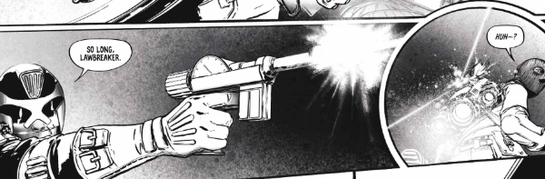

A sporadic flashback series of one-offs set during the first year of published Dredd continuity. One key aspect that's mostly ignored in the established strip, but gets explored here, is that there are still regular cops working alongside the Judges.
Art by Conor Boyle
| Story Title | Parts | Pages | w indicates a wraparound coverCovers | Year(s) | Issues | Writer | Artist | Colourist | Letterer |
|---|---|---|---|---|---|---|---|---|---|
Linked to Judge DreddRampage | 1 | 9 | 0 | 2022 | M451 | Kenneth Niemand | Conor Boyle | [b&w] | Jim Campbell |
Linked to Judge DreddThe Thin Blue Line | 1 | 10 | 0 | 2023 | M459 | Kenneth Niemand | Conor Boyle | [b&w] | Annie Parkhouse |
| year | episodes | pages |
| 2012 | 0 | 0 |
| 2013 | 0 | 0 |
| 2014 | 0 | 0 |
| 2015 | 0 | 0 |
| 2016 | 0 | 0 |
| 2017 | 0 | 0 |
| 2018 | 0 | 0 |
| 2019 | 0 | 0 |
| 2020 | 0 | 0 |
| 2021 | 0 | 0 |
| 2022 | 1 | 9 |
| 2023 | 1 | 10 |
| 2024 | 0 | 0 |
| 2025 | 0 | 0 |
| 2026 | 0 | 0 |
| 2027 | 0 | 0 |
| 2028 | 0 | 0 |
| 2029 | 0 | 0 |
| 2030 | 0 | 0 |
| 2031 | 0 | 0 |
| 2032 | 0 | 0 |
| 2033 | 0 | 0 |